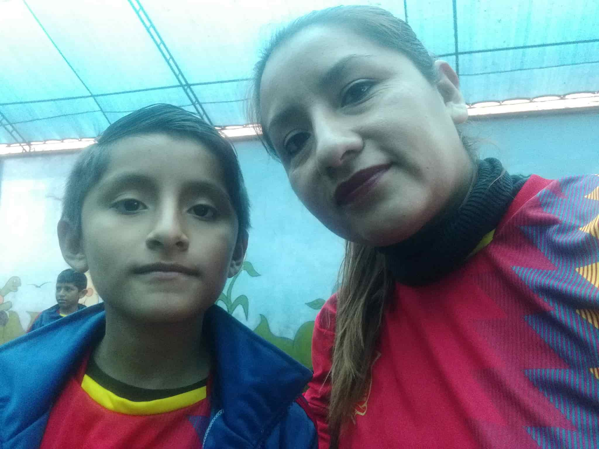

Alonso
About Me
Hi! I'm Alonso, a university student from Perú studying web development. I enjoy learning new technologies, building accessible websites, and exploring nature. I'm passionate about creating user-friendly digital experiences and helping others grow through code.
Comas, Perú

Comas is a vibrant district in Lima, Perú. Known for its lively culture, local markets, and community spirit, it's a place full of energy and growth. Perú itself is rich in history, biodiversity, and culinary traditions—from Machu Picchu to ceviche, there's always something to discover.